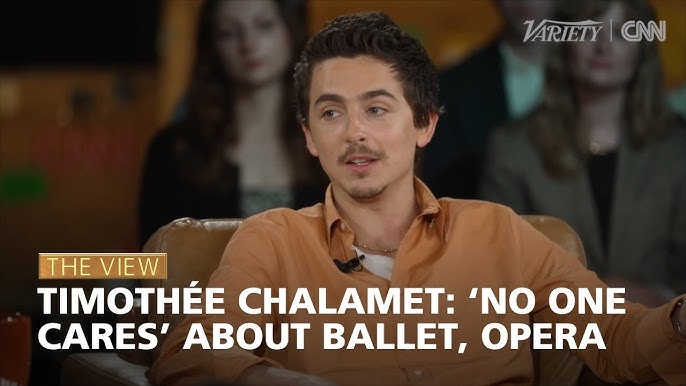

A scrollytelling essay
Timothée Chalamet said ballet and opera are irrelevant.
See how the data says otherwise.
In March 2026, during a Variety and CNN town hall with Matthew McConaughey, actor Timothée Chalamet made a casual remark that set the arts world on fire.

"I don't want to be working in things where it's like, 'Hey, keep this thing alive, even though like no one cares about this anymore.' All respect to all the ballet and opera people out there." — Timothée Chalamet, March 2026
The context was a conversation about the survival of movie theaters. Chalamet's point was that he wanted to make work people actually show up for. But in doing so, he named two of the oldest, most storied art forms in Western history as his counterexample for irrelevance.
The backlash was immediate. Arts institutions responded publicly. The Royal Ballet and Opera extended a personal invitation. Critics noted a particular irony: Chalamet has spoken openly about his family's deep ties to the New York City Ballet, and has been photographed wearing their merchandise.
If no one cares anymore, the ticket sales didn't get the memo.
These numbers tell a different story than Chalamet's offhand remark suggested.
[Placeholder for Chart: Attendance trends over time ]
Will be replaced with data visualization
The "irrelevance" argument often mistakes transformation for decline. Ballet and opera have never been static art forms — they have continuously absorbed new influences, new audiences, and new contexts.
[will add 1–2 paragraphs here expanding on how these institutions have modernized programming and engaged digital platforms.]
Chalamet's comment wasn't just factually questionable, it reveals something worth examining about how we talk about art forms that don't live on streaming platforms or at the cinema.
"Relevance" is often a proxy for visibility. What we can't stream, we assume is dying.
Ballet and opera exist in a cultural blind spot for many people not because they are struggling, but because their primary audience engages with them in person. That invisibility online is not the same as absence.
Critical analysis will be added here -> expanding on the class/access angle, media coverage gap, or the difference between niche and irrelevant
Rather than retreating, the institutions Chalamet dismissed responded with confidence — and a few open invitations.
Timothée Chalamet is one of the most celebrated actors of his generation, and his instinct to fight for the vitality of cinema is genuinely admirable. But in reaching for an example of irrelevance, he named two art forms that are very much alive — evolving, selling out, and finding new audiences.
The mistake was understandable. Ballet and opera don't trend on social media the way a blockbuster does. But cultural visibility and cultural vitality are not the same thing. One is about algorithms. The other is about whether people show up, night after night, and are moved.
[insert closing argument ]
The curtain hasn't fallen.
It never did.